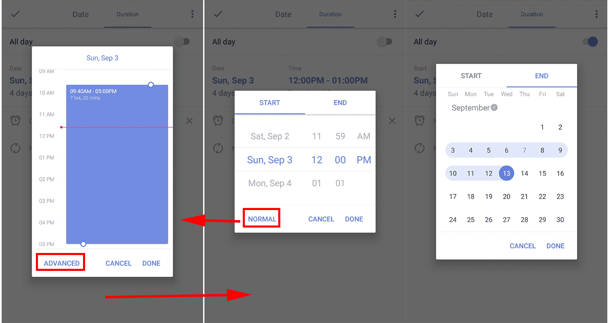

How to add a duration to task?
With "Time Duration" function, you can set both start time and end time to a task. It supports for tasks that cost two or more days as well.
Sign in to TickTick -> Click a task to is details view -> Tap Date to switch to Duration ->Tap Time to select normal/advanced options
P.S.
Normal mode: set time duration within one day
Advanced mode: custom both start time and end time (no limitation)
